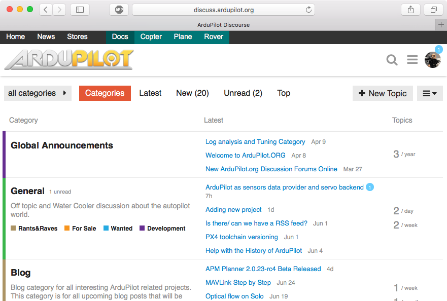

What is ArduPilot?
ArduPilot is a trusted, versatile, and open source autopilot system supporting many vehicle types: multi-copters, traditional helicopters, fixed wing aircraft, boats, submarines, rovers and more. The source code is developed by a large community of professionals and enthusiasts. New developers are always welcome! The best way to start is by joining the Developer Team Forum, which is open to all and chock-full of daily development goodness.
One autopilot for any mission
ArduPilot enables the creation and use of trusted, autonomous, unmanned vehicle systems for the peaceful benefit of all. ArduPilot provides a comprehensive suite of tools suitable for almost any vehicle and application. As an open source project, it is constantly evolving based on rapid feedback from a large community of users. The Development Team works with the community and commercial partners to add functionality to ArduPilot thatbenefits everyone. Although ArduPilot does not manufacture any hardware, ArduPilot firmware works on a wide variety of different hardware to control unmanned vehicles of all types. Coupled with ground control software, unmanned vehicles running ArduPilot can have advanced functionality including real-time communication with operators. ArduPilot has a huge online community dedicated to helping users with questions, problems, and solutions.
The ArduPilot Project provides an advanced, full-featured and reliable open source autopilot software system. The first ArduPilot open code repository was created in 2009 - since then it has been developed by a team of diverse professional engineers, academics, computer scientists, and other members of our global community. It is capable of controlling almost any vehicle system imaginable: conventional and VTOL airplanes, gliders, multirotors, helicopters, sailboats, powered boats, submarines, ground vehicles and even Balance-Bots. The supported vehicle types frequently expand as use cases emerge for new and novel platforms.
Installed in over 1,000,000 vehicles world-wide, and with advanced data-logging, analysis and simulation tools, ArduPilot is a deeply tested and trusted autopilot system. The open-source code base means that it is rapidly evolving, always at the cutting edge of technology development, whilst sound release processes provide confidence to the end user. With many peripheral suppliers creating interfaces, users benefit from a broad ecosystem of sensors, companion computers and communication systems. Since the source code is open, it can be audited to ensure compliance with security and secrecy requirements.
The software suite is installed in vehicles from many manufacturers, such as many from our Partners, and more broadly throughout the global autonomous systems industry. It is also used for testing and development by large institutions and corporations such as NASA, Intel and Insitu/Boeing, as well as countless colleges and universities around the world.

Terms & Slices
Unmanned vehicles
Hardware

Firmware

Software
Ground Station
Mission Planner

ArduPilot Documentation
ArduPilot has a large set of documentation available through its Wiki. See the link DOCS in the top bar to check it. You need to choose your hardware (which you can get help in "AutoPilot Hardware"), then you could follow vehicle's "First Time Setup" for installing the firmware and Ground Station software, connecting the components, and calibration steps.
Community
Community is what really sets ArduPilot apart from many other offerings in the market. Here are some of the places you can find ArduPilot users and developers:
Discussion Forum

Facebook ArduPilot group
Discord
Last posts on Community Blogs
Developer Community
Working on the code? You can start with our Developers Guide and chat with other developers at our discord channels
 VTOL Quadplane for Search & Rescue operations
VTOL Quadplane for Search & Rescue operations  Agricultural automatic robot tractors
Agricultural automatic robot tractors